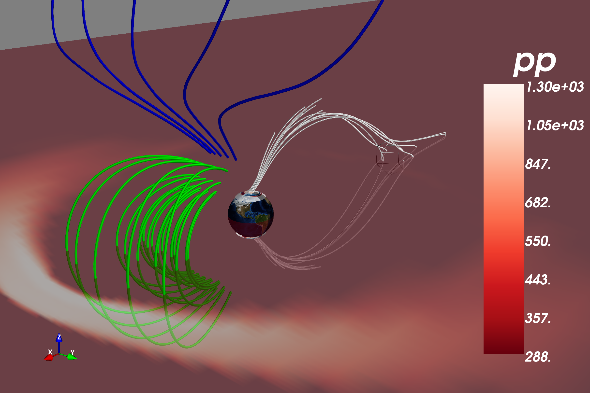

This best way to explain how to use Mayavi is by example, so here is the plot made by test_mvi.py along with some code
#!/usr/bin/env python
""" Try to convert a Field to a mayavi type and plot
streamlines or something """
from __future__ import print_function
import sys
import os
import argparse
from mayavi import mlab
_viscid_root = os.path.realpath(os.path.dirname(__file__) + '/../viscid/')
if not _viscid_root in sys.path:
sys.path.append(_viscid_root)
import viscid
from viscid import vutil
from viscid.plot import mvi
def main():
parser = argparse.ArgumentParser(description="Test calc")
parser.add_argument("--show", "--plot", action="store_true")
args = vutil.common_argparse(parser)
f3d = viscid.load_file(_viscid_root + '/../sample/sample.3df.[0].xdmf')
f_iono = viscid.load_file(_viscid_root + "/../sample/*.iof.[0].xdmf")
b = f3d["b"]
pp = f3d["pp"]
# plot a scalar cut plane of pressure
pp_src = mvi.field2source(pp, center='node')
scp = mlab.pipeline.scalar_cut_plane(pp_src, plane_orientation='z_axes',
transparent=True, opacity=0.5,
view_controls=False)
scp.implicit_plane.normal = [0, 0, -1]
scp.implicit_plane.origin = [0, 0, 0]
# i don't know why this log10 doesn't seem to work
scp.module_manager.scalar_lut_manager.lut.scale = 'log10'
scp.module_manager.scalar_lut_manager.lut_mode = 'Reds'
scp.module_manager.scalar_lut_manager.reverse_lut = True
scp.module_manager.scalar_lut_manager.show_scalar_bar = True
# calculate B field lines && topology in viscid and plot them
seeds = viscid.SphericalPatch([0, 0, 0], [2, 0, 1], 30, 15, r=5.0,
nalpha=5, nbeta=5)
b_lines, topo = viscid.calc_streamlines(b, seeds, ibound=3.5,
obound0=[-25, -20, -20],
obound1=[15, 20, 20])
mvi.plot_lines(b_lines, scalars=viscid.topology2color(topo))
# Use Mayavi (VTK) to calculate field lines using an interactive seed
b_src = mvi.field2source(b, center='node')
bsl2 = mlab.pipeline.streamline(b_src, seedtype='sphere',
integration_direction='both',
seed_resolution=4)
bsl2.stream_tracer.maximum_propagation = 20.
bsl2.seed.widget.center = [-11, 0, 0]
bsl2.seed.widget.radius = 1.0
bsl2.streamline_type = 'tube'
bsl2.tube_filter.radius = 0.03
bsl2.stop() # this stop/start was a hack to get something to work?
bsl2.start()
bsl2.seed.widget.enabled = True
# Plot the ionosphere too
fac_tot = 1e9 * f_iono['fac_tot']
crd_system = 'gse'
m = mvi.plot_ionosphere(fac_tot, crd_system=crd_system, bounding_lat=30.0,
vmin=-300, vmax=300, opacity=0.75)
m.module_manager.scalar_lut_manager.lut_mode = 'RdBu'
m.module_manager.scalar_lut_manager.reverse_lut = True
mvi.plot_blue_marble(r=1.0, orientation=(0, 21.5, -45.0))
# now shade the night side with a transparent black hemisphere
mvi.plot_earth_3d(radius=1.01, crd_system="gse", night_only=True,
opacity=0.5)
mlab.axes(pp_src, nb_labels=5)
mlab.orientation_axes()
mvi.resize([1200, 800])
mlab.view(azimuth=40, elevation=70, distance=35.0, focalpoint=[-3, 0, 0])
# # Save Figure
# print("saving png")
# mvi.mlab.savefig('mayavi_msphere_sample.png')
# print("saving x3d")
# # x3d files can be turned into COLLADA files with meshlab, and
# # COLLADA (.dae) files can be opened in OS X's preview
# #
# # IMPORTANT: for some reason, using bounding_lat in mvi.plot_ionosphere
# # causes a segfault when saving x3d files
# #
# mvi.mlab.savefig('mayavi_msphere_sample.x3d')
# print("done")
if args.show:
mlab.show()
if __name__ == "__main__":
main()
##
## EOF
##